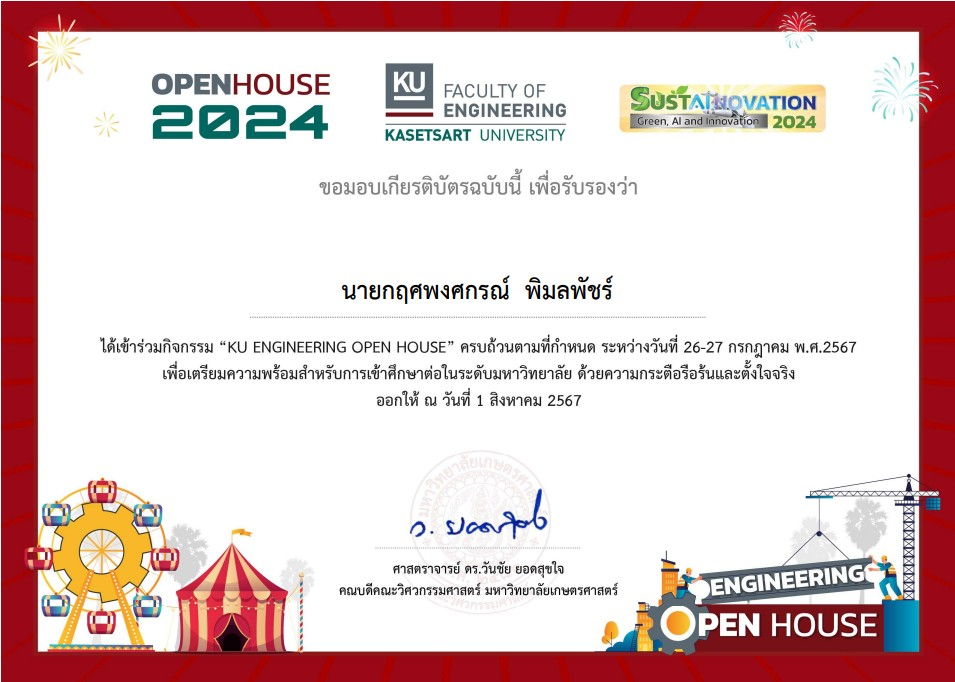
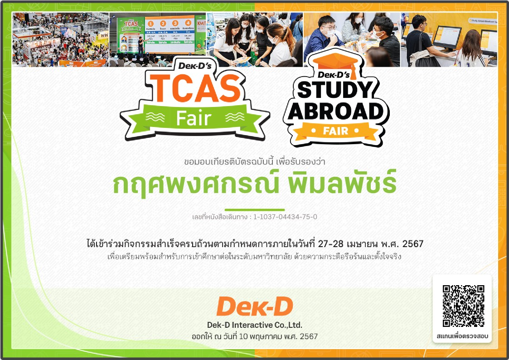
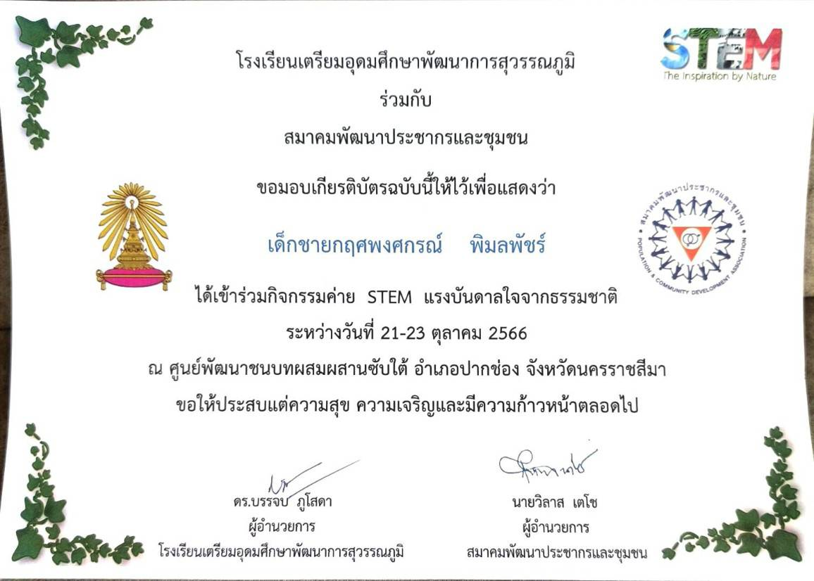

Portfolio

เข้าร่วมกิจกรรม "KU ENGINEERING OPEN HOUSE" ระหว่างวันที่ 26-27 กรกฎาคม พ.ศ. 2567 เพื่อเตรียมความพร้อมสำหรับการเข้าศึกษาต่อในระดับมหาวิทยาลัย ด้วยความกระตือรือร้นและตั้งใจจริง โดยได้รับการรับรองจากศาสตราจารย์ ดร.วันชัย ยอดสุขใจ คณบดีคณะวิศวกรรมศาสตร์ มหาวิทยาลัยเกษตรศาสตร์
This is a detailed description of Project 1, explaining the tools, technologies, and challenges faced during its development.

เข้าร่วมกิจกรรม K-Engineering World Tour and Workshop 2024 ระหว่างวันที่ 2 - 4 สิงหาคม พ.ศ. 2567 ณ คณะวิศวกรรมศาสตร์ มหาวิทยาลัยเทคโนโลยีพระจอมเกล้าลาดกระบัง (KMITL)
This is a detailed description of Project 2, explaining the design decisions, technologies used, and outcomes.

เข้าร่วมกิจกรรม KMITL Open House 2024 ในหัวข้อ Digital Life & Smart Campus ณ สถาบันเทคโนโลยีพระจอมเกล้าเจ้าคุณทหารลาดกระบัง ระหว่างวันที่ 27-28 เมษายน 2567 โดยได้รับการรับรองจากรองศาสตราจารย์ ดร.คมสัน มาลีสี อธิการบดีของสถาบันฯ
This is a detailed description of Project 3, covering the problem-solving approach, technologies, and final results.
.jpg)
เข้าร่วมการอบรมเชิงปฏิบัติการหลักสูตร Cyber Hygiene (ผ่านสื่ออิเล็กทรอนิกส์) ภายใต้กิจกรรมค่ายเยาวชนไซเบอร์ (Cyber Youth Camp) โดยได้รับการรับรองจาก พลอากาศตรี อมร ชมเชย เลขาธิการคณะกรรมการการรักษาความมั่นคงปลอดภัยไซเบอร์แห่งชาติ (NCSA) เมื่อวันที่ 22 กันยายน พ.ศ. 2567
This is a detailed description of Project 4, explaining the development process and technology stack used.

เข้าร่วมกิจกรรม TCAS DeK-D's Study Abroad Fair ระหว่างวันที่ 27-28 เมษายน พ.ศ. 2567 โดยสำเร็จครบถ้วนตามกำหนดการ เพื่อเตรียมพร้อมสำหรับการศึกษาต่อในระดับมหาวิทยาลัย ด้วยความกระตือรือร้นและตั้งใจจริง โดยออกให้ ณ วันที่ 10 พฤษภาคม พ.ศ. 2567 จาก Dek-D Interactive Co., Ltd.
This is a detailed description of Project 5, showcasing the creative process and final product.

เข้าร่วมกิจกรรมค่าย STEM "แรงบันดาลใจจากธรรมชาติ" ระหว่างวันที่ 21-23 ตุลาคม 2566 ณ ศูนย์พัฒนาชนบทผสมผสานซับใต้ อำเภอปากช่อง จังหวัดนครราชสีมา
This is a detailed description of Project 6, detailing the features and impact of the project.